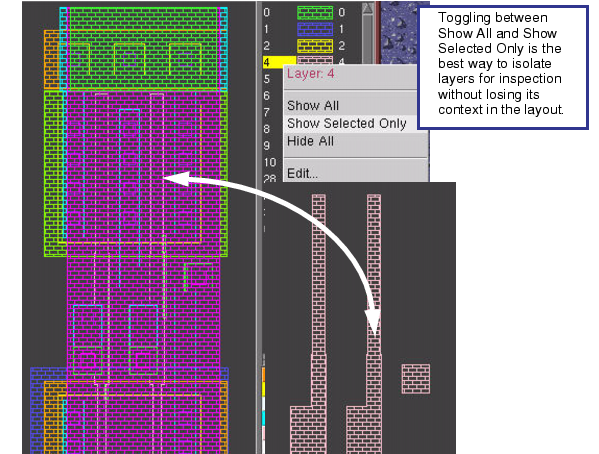

Calibre DESIGNrev
provides options for hiding or showing all layers, hiding a single
layer, or hiding multiple layers in order to better view the layout.
Procedure
Use one of the following methods
to hide, show, or emphasize layers:
If you want to...
|
Do the following:
|
|---|
Hide or show all layers
|
Select Shift + Hide or Show button on the Layers Browser.
Unselect all layers in the Layers Browser and
click Hide or Show.
Right-click the Layers Browser and select Hide
All or Show All.
|
Emphasize a layer
|
Right-click
the Layers Browser and select .
|
Hide a single layer
|
Double-click a layer
in the Layers Browser to hide the layer. If a particular polygon
dominates the main display window, look for the layer color in the
Layers Browser, and then hide it to see its features below.
|
Hide multiple
layers
|
Select the first layer with a left-click.
Press the Ctrl or Shift key and select additional
layers. Use the Shift key to select additional consecutive layers,
or the Ctrl key to select additional non-consecutive layers.
Select the Hide button
to hide the selected layers, or right-click the Layers Browser to
view only the Show Selected Only layers.
Switch back to viewing all layers by right-clicking
the Layers Browser and selecting Show
All.
Toggling between Show All and Show Selected Only is the best
way to isolate a single layer without losing its context in the
layout when navigating around layouts as shown in Figure 1.
|
Figure 1. Toggling Between All
Layers and Selected Layers